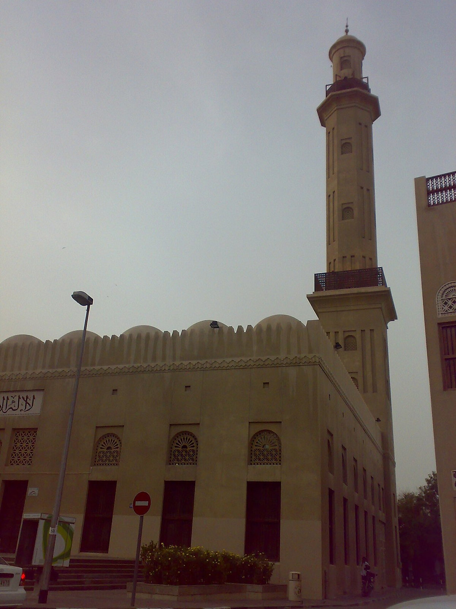

OTIUM is the practice of deliberate leisure. In the classical sense, otium is not escape from work but time when attention returns to memory, landscape, and thought — without a utilitarian deadline.
We shape routes for lingering, not for checklist tourism. The goal is presence in a place rather than consumption of sights.
OTIUM is not a tour operator. It is an invitation to walk, pause, and leave a route unfinished if the light on a façade deserves another minute.
Historical and reference coats of arms
Dubai
Guide. Places in this edition: 36.
Al Fahidi Historical District
Al Fahidi Historical District — landmark in Dubai.
Facts and details
Check opening hours and ticketing on official sites before travel.
Tallest building in the world at completion, with observation decks on upper levels and fountain shows at its base.
Facts and details
At.mosphere restaurant occupied a high floor for years before other concepts rotated in.
Tickets for sunset slots often sell out first.
History
Emaar-led megaproject rebranded from Burj Dubai at opening; it anchors Sheikh Zayed Road's high-rise corridor.
Significance
The vertical exclamation point of Dubai's skyline marketing.
City Walk Dubai
City Walk Dubai — landmark in Dubai.
Facts and details
Check opening hours and ticketing on official sites before travel.
Crowds peak on weekends and public holidays.
Deira Old Souk
Deira Old Souk — landmark in Dubai.
Facts and details
Check opening hours and ticketing on official sites before travel.
Crowds peak on weekends and public holidays.
Downtown Montreal (8392011668).jpg
Downtown Montreal (8392011668).jpg
Downtown Montreal (8392011668).jpg — landmark in Dubai.
Dubai (19225459).jpeg
Dubai (19225459).jpeg
Dubai (19225459).jpeg — landmark in Dubai.
Dubai Creek (Deira side)
Address: Deira and Bur Dubai | Style: Traditional dhow wharves and souk fabric
Saltwater inlet where abras cross between textile and gold souks. Abras still carry commuters for a dirham fare.
Facts and details
Spice aromas and textile lanes sit a short walk from the abra docks.
Al Fahidi's wind-tower neighbourhood lies on the Bur Dubai bank.
History
Pearling and trade boats anchored here before oil revenues shifted the city's centre of gravity seaward.
Significance
The human-scale counterweight to Marina glass canyons.
Dubai Frame
Address: Zabeel Park | Style: Vertical gold cladding on rectangular portal | Period: 2018
Observation bridge linking old creek narratives with Sheikh Zayed Road skyline views.
Facts and details
Glass-floor panels mark the transition between old and new galleries.
Zabeel Park metro reduces taxi hunting at weekends.
History
Competition-winning portal symbol sparked debate on skyline gimmicks versus storytelling.
Significance
Photographic frame device literalised as architecture.
Dubai Grand mosque 01.jpg
Dubai Grand mosque 01.jpg

Dubai Grand mosque 01.jpg — landmark in Dubai.
Dubai Hills Park
Dubai Hills Park — landmark in Dubai.
Facts and details
Check opening hours and ticketing on official sites before travel.
Crowds peak on weekends and public holidays.
Dubai Hindu temple.jpg
Dubai Hindu temple.jpg
Dubai Hindu temple.jpg — landmark in Dubai.
Dubai Marina
Address: Dubai Marina district | Style: High-rise residential towers along artificial canal | Period: 2000s onward
Man-made marina lined with towers, cafés, and dhow dinner cruises. Evening light reflects in the water between walkways.
Facts and details
The Marina Walk is popular for jogging after dark when temperatures ease.
Tram links connect to JBR beach without crossing busy roads.
History
Excavated channel and reclaimed edges created a new waterfront property template west of the old creek trade city.
Significance
Densest cluster of residential supertalls in the emirate.
Dubai Museum (Al Fahidi Fort)
Address: Al Fahidi Historical Neighbourhood | Style: Arabian Gulf defensive tower | Period: 1787 coral-block fort
Exhibits on pearling, souk life, and creek archaeology inside the city's oldest surviving building.
Facts and details
Combine with sheikh's diwan courtyards nearby.
Evening abra rides depart below the ramparts.
History
Fasil defensive seat before British protectorate maps reshaped coastal security.
Significance
Grounds the megacity origin in creek trade.
Dubai Opera
Dubai Opera — landmark in Dubai.
Facts and details
Check opening hours and ticketing on official sites before travel.
Crowds peak on weekends and public holidays.
DubaiMuseum2.jpg
DubaiMuseum2.jpg
DubaiMuseum2.jpg — landmark in Dubai.
Etihad Museum
Etihad Museum — museum in Dubai.
Facts and details
Check opening hours and ticketing on official sites before travel.
Crowds peak on weekends and public holidays.
Expo City Dubai
Expo City Dubai — landmark in Dubai.
Facts and details
Check opening hours and ticketing on official sites before travel.
Crowds peak on weekends and public holidays.
Global Village (seasonal)
Address: Sheikh Mohammed Bin Zayed Road | Style: Pavilion architecture replicas | Period: 1997 onward seasonal fair
Winter-night fairground of country pavilions, street food, and carnival rides east of the city core.
Facts and details
Open roughly November–April; check dates before planning.
Parking lots are vast—note your zone letter.
History
Started as modest heritage tents; scale now matches regional exposition ambitions.
Significance
Family budget night out for expatriate communities.
Gold Souk Deira
Gold Souk Deira — landmark in Dubai.
Facts and details
Check opening hours and ticketing on official sites before travel.
Crowds peak on weekends and public holidays.
Grand Mosque Dubai
Grand Mosque Dubai — landmark in Dubai.
Facts and details
Check opening hours and ticketing on official sites before travel.
Crowds peak on weekends and public holidays.
Hatta Dam
Hatta (Arabic: حتا locally [ˈħɑttɐ]) is an inland exclave of the emirate of Dubai in the United Arab Emirates. Formerly Omani territory, its ownership was transferred to Dubai in or around 1850. Geography It lies to the south-east of Dubai's main territory and is about 134 km (83 mi) east of Dubai.
Facts and details
Check opening hours and ticketing on official sites before travel.
Crowds peak on weekends and public holidays.
Hatta Heritage Village
Hatta Heritage Village — landmark in Dubai.
Facts and details
Check opening hours and ticketing on official sites before travel.